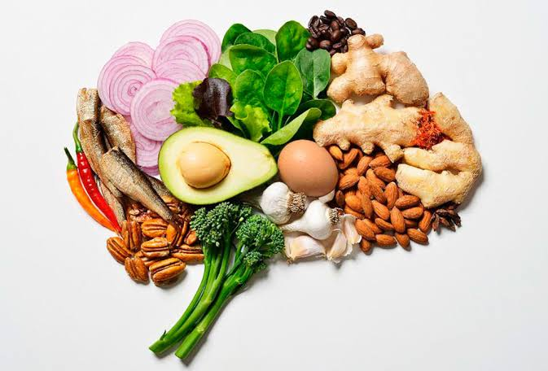

CASO CURIOSO #2: La Regla de los 20 Minutos al Comer
Comer con prisa es un hábito común en el estilo de vida moderno, pero tiene un impacto fisiológico directo en el control del peso. En la Clínica NutriVida enfatizamos la importancia de la velocidad de ingesta dentro de nuestras pautas de reeducación alimentaria.
Desde el momento en que empezamos a ingerir alimentos, el sistema digestivo comienza a liberar hormonas de saciedad como la colecistocinina (CCK), el péptido YY y el GLP-1. Sin embargo, este circuito hormonal de comunicación entre el estómago y el hipotálamo tarda aproximadamente 20 minutos en enviar y procesar la señal de plenitud.
Si consumimos una comida completa en menos de 10 o 15 minutos, es muy probable que ingiramos una cantidad de calorías superior a la que nuestro cuerpo realmente necesita antes de que el cerebro registre que ya estamos satisfechos. Masticar despacio y pausar entre bocados es una de las estrategias más efectivas para mejorar la digestión y prevenir sobreingestas innecesarias.
Fuente oficial de referencia: Biblioteca Nacional de Medicina de EE. UU. (NIH / MedlinePlus) – Consejos para controlar las porciones y comer de forma consciente
Revisado por: Equipo Clínico NutriVida, Temuco.